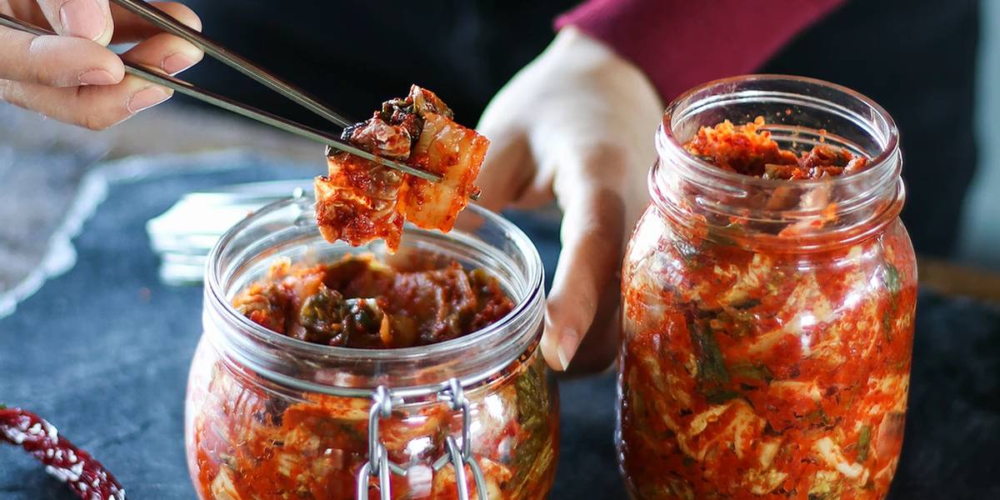

Kimchi

Why Not Store Bought?
So why not just go to the grocery store, and purchase some kimchi from the "ethnic" section. I'll tell you why, it's just not as good.
If you've ever had the luxury of eating homemade kimchi you'll know that it's out of this world compared to the store bought stuff. However, that's not even the best part.
the best part is, it is so easy to make. All you really need is some time and a little chemistry and boom you're in business. If you're really in a rush to purchase
your own kimchi, i'd recommend that you at least buy some that has large chunks, and a light color. The kind of kimchi in the store uses red dye to make it look more
authentic. The But really, the real deal gets that beautiful color from the chili flakes, not food coloring. Cool? Okay let's begin.
What to Eat Kimchi With?
Kimchi is a great dish to keep on hand anytime of the year. I think that Kimchi goes with any meal, but Kimchi goes especially well with Korean BBQ.
It's also a great side dish to serve with Cucumber Salad.
Ingredients
- 1 medium head napa cabbage (about 2 lb)
- 1/4 cup iodine-free sea salt or kosher salt
- water, preferably distilled or filtered
- 1 tbsp grated garlic (about 5 to 6 cloves)
- 1 tsp grated ginger
- 1 tsp sugar
- 2 tbsp fish sauce
- 1 to 5 tbsp Korean red pepper flakes
- 8 oz Korean radish or daikon radish
- 4 green onion, trimmed and cut into 1-inch pieces
Steps
- Cut the cabbage lengthwise through the stem into quarters. Cut the cores from each piece. Cut each quarter crosswise into 2-inch-wide strips.
- Place the cabbage in a large bowl and sprinkle with the salt. Using your hands, massage the salt into the cabbage until it starts to soften a bit.
Add enough water to cover the cabbage. Put a plate on top of the cabbage and weigh it down with something heavy, like a jar or can of beans. Let stand for 1 to 2 hours
- Rinse the cabbage under cold water 3 times. Set aside to drain in a colander for 15 to 20 minutes. Meanwhile, make the spice paste.
- Rinse and dry the bowl you used for salting. Add the garlic, ginger, sugar, and fish sauce, shrimp paste, or water and stir into a smooth paste.
Stir in the gochugaru, using 1 tablespoon for mild and up to 5 tablespoons for spicy (I like about 3 1/2 tablespoons); set aside until the cabbage is ready.
- Gently squeeze any remaining water from the cabbage and add it to the spice paste. Add the radish and scallions
- Using your hands, gently work the paste into the vegetables until they are thoroughly coated.
The gloves are optional here but highly recommended to protect your hands from stings, stains, and smells!
- ack the kimchi into a 1-quart jar.
Press down on the kimchi until the brine (the liquid that comes out) rises to cover the vegetables, leaving at least 1 inch of space at the top. Seal the jar.
- Place a bowl or plate under the jar to help catch any overflow. Let the jar stand at cool room temperature, out of direct sunlight, for 1 to 5 days.
You may see bubbles inside the jar and brine may seep out of the lid.
- Check the kimchi once a day, opening the jar and pressing down on the vegetables with a clean finger or spoon to keep them submerged under the brine.
(This also releases gases produced during fermentation.) Taste a little at this point, too! When the kimchi tastes ripe enough for your liking,
transfer the jar to the refrigerator. You may eat it right away, but it's best after another week or two.
Return to Index